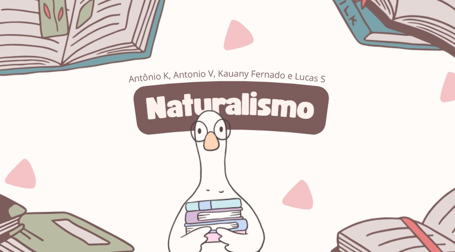
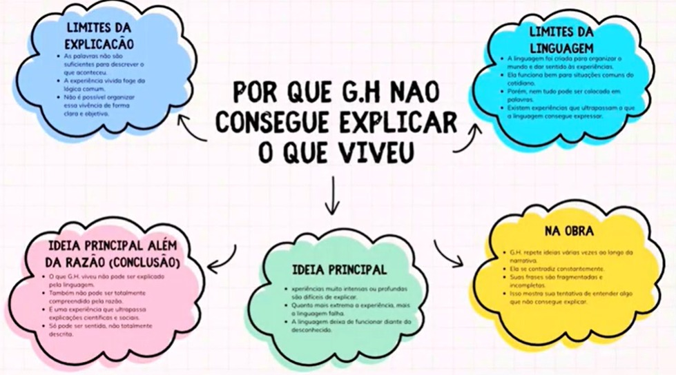
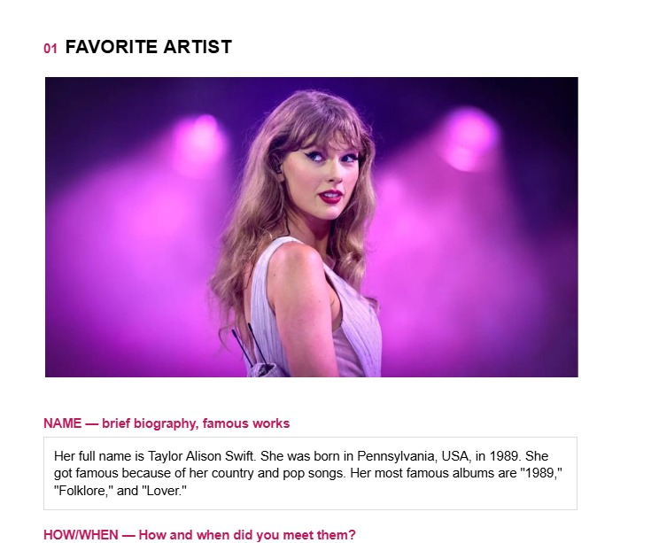
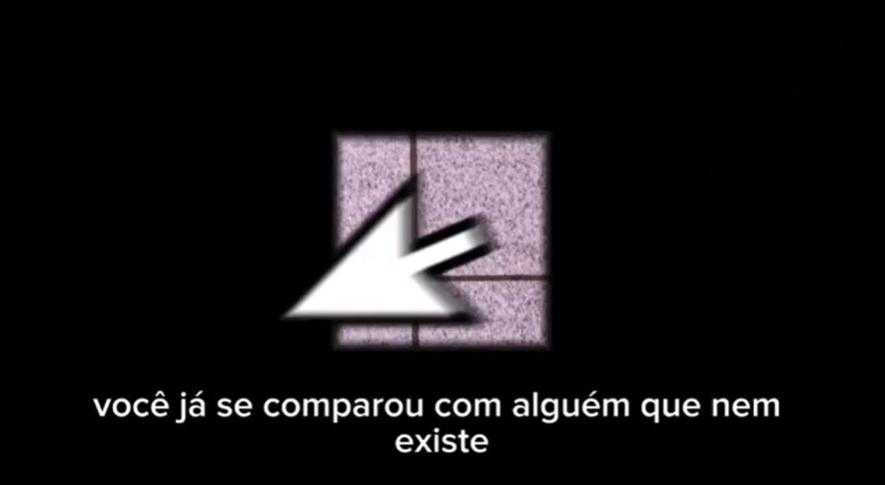
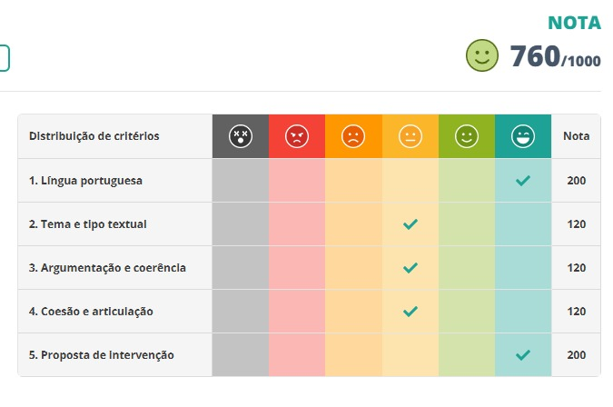

Desenvolvi um jogo interativo no Wordwall sobre uma escola literária brasileira, abrangendo do Quinhentismo ao Simbolismo, para revisar conteúdos de forma gamificada. A atividade envolveu pesquisa e curadoria de dados para criar desafios que demonstrassem o domínio das estéticas e contextos históricos. Com isso, exercitei a colaboração em grupo e a capacidade de sintetizar conceitos literários complexos em uma linguagem dinâmica. Essa experiência aprimorou minha fluência digital e minha percepção crítica sobre a evolução da nossa literatura.
H15 - Produzir trabalhos individuais e coletivos, explorando materiais e técnicas ligados ao universo das composições artísticas e de práticas corporais.

Nesta atividade, busquei analisar o livro de Clarice Lispector sob diferentes eixos teóricos, como a sociologia e a psicologia. Embora tenha compreendido a leitura, senti bastante dificuldade na execução prática das etapas propostas, o que comprometeu o resultado final do trabalho. Reconheço que não consegui articular bem os conceitos com a dinâmica exigida, resultando em uma entrega abaixo do meu potencial. Essa experiência foi importante para eu perceber que preciso organizar melhor a aplicação prática de temas complexos.
H4 e H22

Nesta atividade, escrevi em inglês sobre meu artista, filme e música favoritos. Aprendi novas palavras, pratiquei o uso do Simple Past e desenvolvi minha escrita em inglês. A atividade foi interessante porque permitiu relacionar o conteúdo da disciplina com meus gostos pessoais. Gostei de pesquisar e aprender mais sobre obras e artistas que admiro.
H25 - Interpretar textos em Língua Estrangeira Moderna (Inglês).

Estudamos o gênero manifesto a partir das obras modernistas de Oswald de Andrade para compreender sua linguagem crítica e provocativa. Na prática, produzimos um manifesto em vídeo abordando a pressão estética nas redes sociais. A atividade desenvolveu nosso pensamento crítico, a argumentação e a criatividade ao conectar o Modernismo a questões atuais.
H3 - Identificar o tema principal, os subtemas e finalidades dos textos; H24 - Produzir textos escritos de domínio acadêmico e educacional.

H22 - Produzir textos técnicos de acordo com uma estrutura estabelecida.